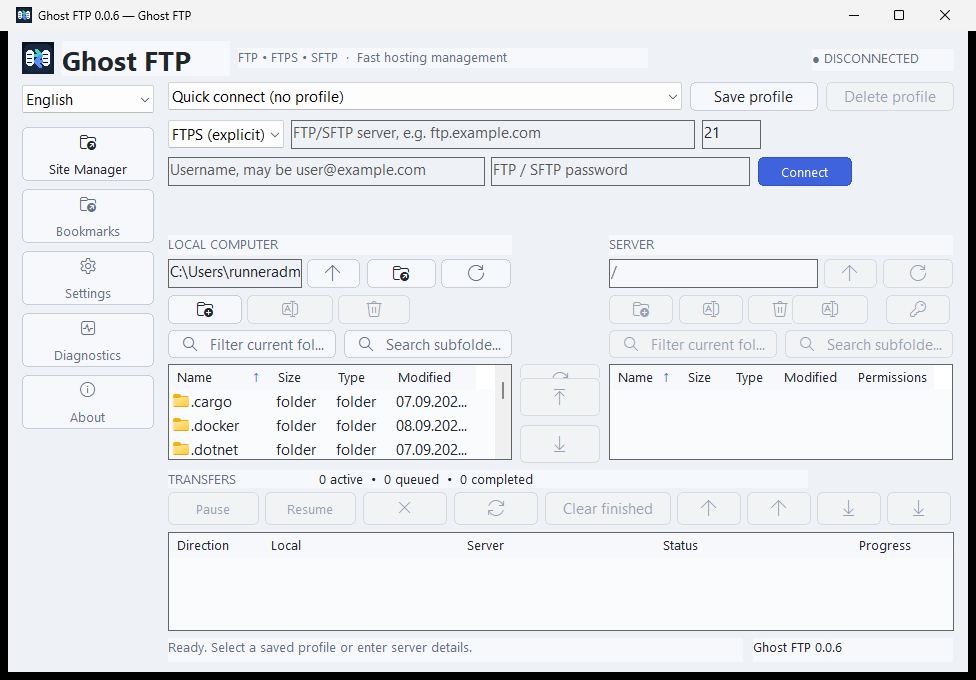
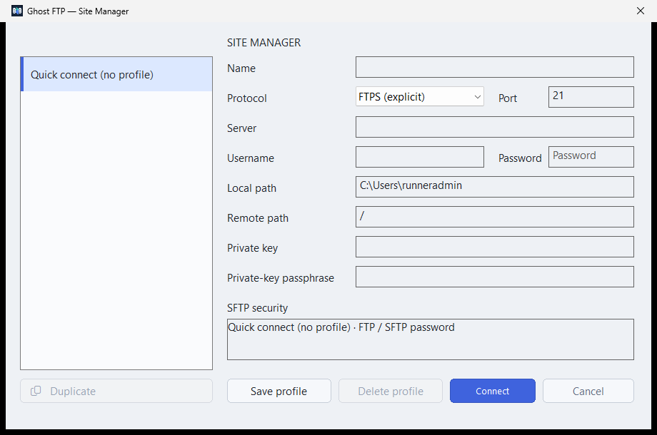
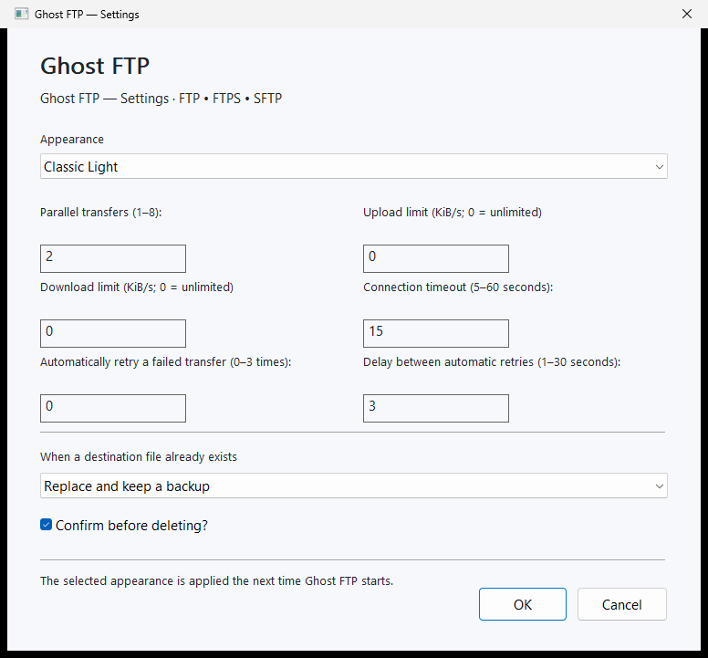
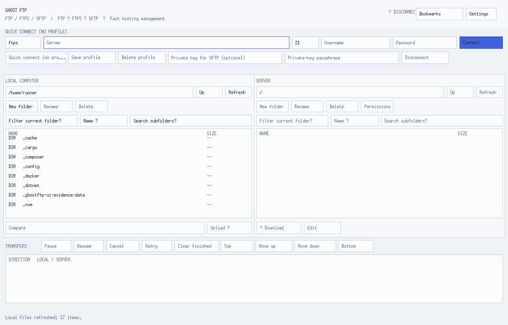
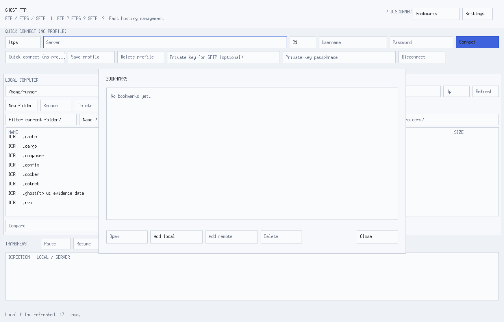
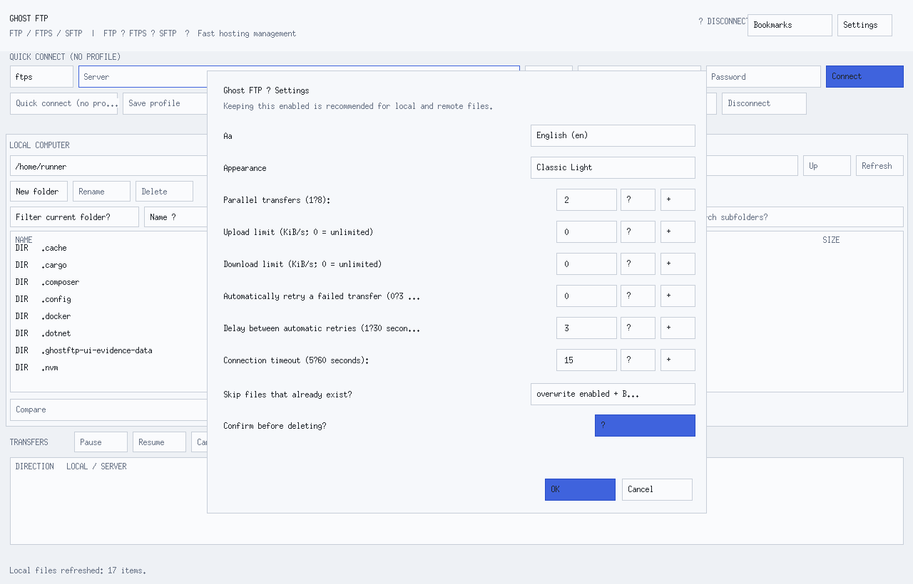
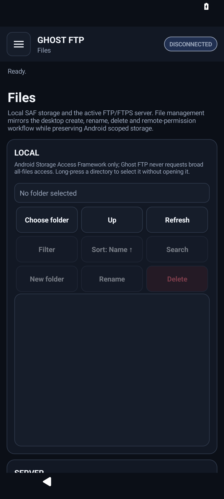
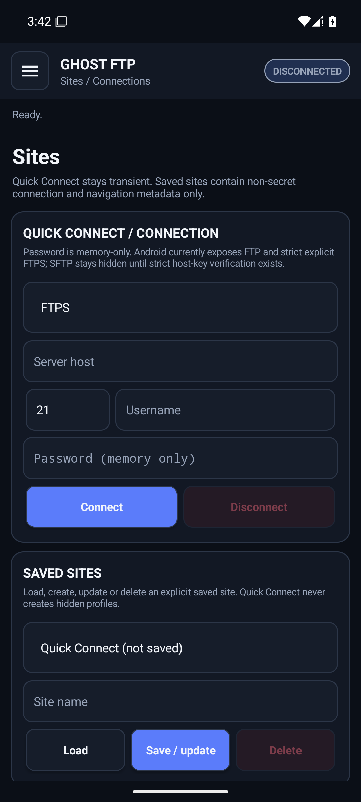
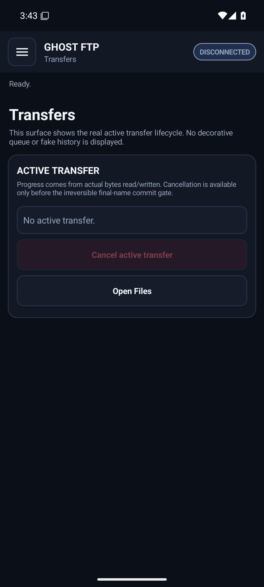

Two-pane file control
Local and remote panes, sorting, filters, bookmarks, server profiles, directory comparison, search and common file actions.
A focused workspace for FTP, explicit FTPS and SFTP with local profiles, controlled transfers and privacy-first defaults.

Browse files, manage saved servers, control transfers and edit remote text files without turning basic server access into a cloud account.
Local and remote panes, sorting, filters, bookmarks, server profiles, directory comparison, search and common file actions.
Live progress, cancellation, retry, pause or resume where supported, and clear transfer status.
Open supported text files, make focused changes and save them back to the active server.
No analytics SDK, advertising tracker, hidden sync account or automatic crash upload in the maintained apps.
FTPS verifies TLS identity. Supported SFTP clients verify server identity instead of silently trusting an unknown host.
English plus 23 maintained desktop translations, with consistent navigation and settings terminology.
Real Ghost FTP 0.0.6 screenshots from Windows, Linux and Android.








FTPS verifies the certificate and server name. SFTP requires trusted server identity where the platform supports it.
The supplied Web FTP deployment blocks unsafe local and reserved destination ranges by default.
Ghost FTP Web keeps connection details only for the current tab and does not create a persistent password store.
One Setup and one Portable package, with automatic selection for x64, x86 and ARM64.
Windows downloadsInstaller and Portable packages for each supported distribution with automatic architecture selection.
Linux downloadsOne APK for Android 8.0 and newer. FTP and explicit FTPS are available; Android SFTP remains unavailable until strict host verification is complete.
Android downloadA separate package for each browser with zero browser permissions and zero host permissions.
Browser downloads